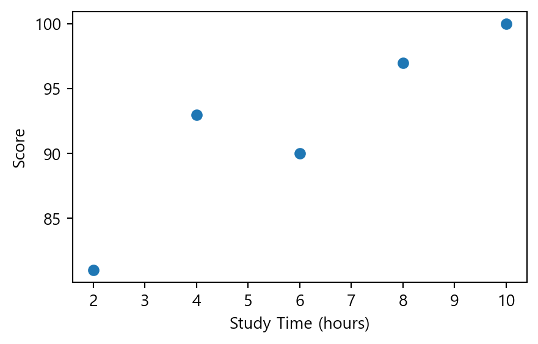
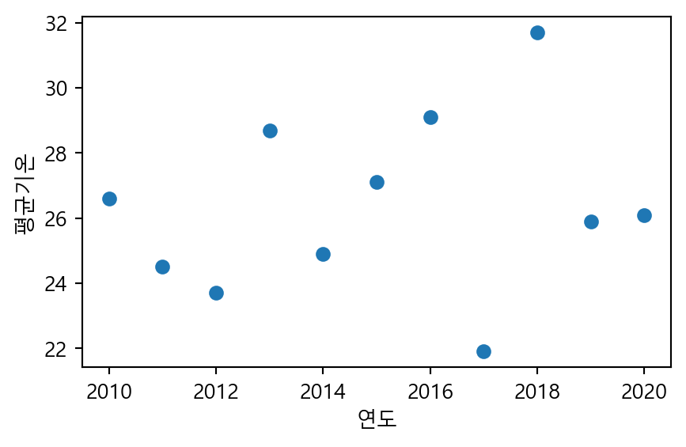
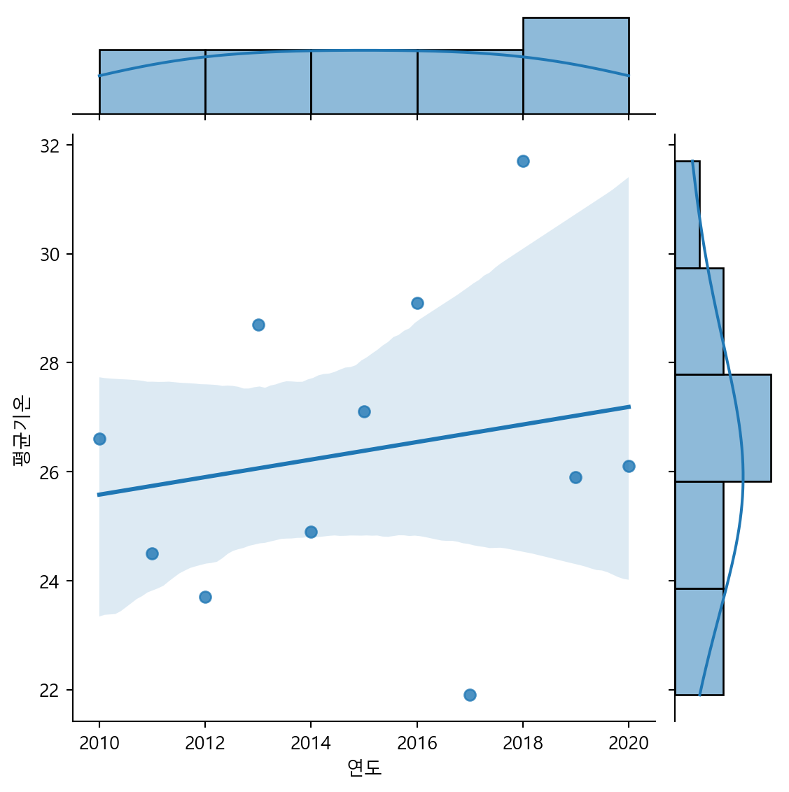

## (1) 데이터 확인 및 전처리
- 지도학습 : 회귀
8.1. 상관분석
8.1.1. 상관계수
- 상관분석(correlation analysis)
- 두 수치형 변수 간 선형적인 관계(linear relationship)를 파악하는 통계 기법
- 상관계수(correlation coefficient)
- 두 변수 간 상관관계를 수치로 나타내어 정량화한 지표
- 상관계수의 절대값은 선형성의 강도를, 부호는 선형성의 방향성을 나타냄
- 변수의 측정 단위의 영향을 받지 않음
- 상관계수의 성질
- 상관계수 r은 항상 -1에서 +1 사이의 값을 가짐
- 절대값이 1에 가까울수록 강한 상관관계를 의미함
- r>0이면 양의 상관관계, r<0이면 음의 상관관계, r=0이면 상관관계가 없음을 나타냄
- 양의 상관관계 : 한 변수가 증가할 때 다른 변수도 증가
- 음의 상관관계 : 한 변수가 증가할 때 다른 변수는 감소
- 상관관계 없음 : 한 변수가 증가할 때 다른 변수는 영향을 받지 않음

8.1.2. (실습) 행복지수 데이터 분석
- [데이터] 캐글에서 제공하는 전세계 행복지수 데이터
행복지수와 관련된 요인은 무엇일까?
# 라이브러리 불러오기
import numpy as np
import pandas as pd
import matplotlib.pyplot as plt
import seaborn as sns# 데이터 불러오기
df2020 = pd.read_csv('./data/2020.csv', index_col=0)
df2021 = pd.read_csv('./data/2021.csv', index_col=0)# 열 정보
df2020.dtypesCountry name object
Happiness score float64
upperwhisker float64
lowerwhisker float64
GDP per capita float64
Social support float64
Healthy life expectancy float64
Freedom to make life choices float64
Generosity float64
Dystopia float64
dtype: object# 2020년 데이터 확인
df2020.head()| Country name | Happiness score | upperwhisker | lowerwhisker | GDP per capita | Social support | Healthy life expectancy | Freedom to make life choices | Generosity | Dystopia | |
|---|---|---|---|---|---|---|---|---|---|---|
| Rank | ||||||||||
| 1 | Finland | 7.8087 | 7.869766 | 7.747634 | 10.639267 | 0.954330 | 71.900825 | 0.949172 | -0.059482 | 2.762835 |
| 2 | Denmark | 7.6456 | 7.711245 | 7.579955 | 10.774001 | 0.955991 | 72.402504 | 0.951444 | 0.066202 | 2.432741 |
| 3 | Switzerland | 7.5599 | 7.628528 | 7.491272 | 10.979933 | 0.942847 | 74.102448 | 0.921337 | 0.105911 | 2.350267 |
| 4 | Iceland | 7.5045 | 7.621347 | 7.387653 | 10.772559 | 0.974670 | 73.000000 | 0.948892 | 0.246944 | 2.460688 |
| 5 | Norway | 7.4880 | 7.556281 | 7.419719 | 11.087804 | 0.952487 | 73.200783 | 0.955750 | 0.134533 | 2.168266 |
# 2021년 데이터 확인
df2021.head()| Country name | Happiness score | upperwhisker | lowerwhisker | GDP per capita | Social support | Healthy life expectancy | Freedom to make life choices | Generosity | Dystopia | |
|---|---|---|---|---|---|---|---|---|---|---|
| Rank | ||||||||||
| 1 | Finland | 7.842 | 7.904 | 7.780 | 10.775 | 0.954 | 72.0 | 0.949 | -0.098 | 3.253 |
| 2 | Denmark | 7.620 | 7.687 | 7.552 | 10.933 | 0.954 | 72.7 | 0.946 | 0.030 | 2.868 |
| 3 | Switzerland | 7.571 | 7.643 | 7.500 | 11.117 | 0.942 | 74.4 | 0.919 | 0.025 | 2.839 |
| 4 | Iceland | 7.554 | 7.670 | 7.438 | 10.878 | 0.983 | 73.0 | 0.955 | 0.160 | 2.967 |
| 5 | Netherlands | 7.464 | 7.518 | 7.410 | 10.932 | 0.942 | 72.4 | 0.913 | 0.175 | 2.798 |
# 데이터 전처리 : 열 삭제
df2020.drop(['upperwhisker', 'lowerwhisker', 'Dystopia'], axis=1, inplace=True)
df2021.drop(['upperwhisker', 'lowerwhisker', 'Dystopia'], axis=1, inplace=True)# 열 이름 변경 : 공백을 .으로 대체
#df2020.columns = df2020.columns.str.replace(' ','.')
#df2021.columns = df2021.columns.str.replace(' ','.')# 데이터 전처리 : 열 이름 변경
df2020.columns = ['Country', 'Score', 'GDP.per.capita', 'Social.support', 'Life.expectancy', 'Freedom', 'Generosity']
df2021.columns = ['Country', 'Score', 'GDP.per.capita', 'Social.support', 'Life.expectancy', 'Freedom', 'Generosity']## (2) 데이터 분석 및 시각화
## (2-1) 행복 점수와 기능의 상관관계
## 한 국가의 행복지수와 경제적(GDP), 법적 상태(Freedom)는 상관관계가 있는가?# 2020년 데이터 전처리
df1 = df2020.copy()
df1.drop(['Social.support', 'Life.expectancy', 'Generosity'], axis=1, inplace=True)
df1.head()| Country | Score | GDP.per.capita | Freedom | |
|---|---|---|---|---|
| Rank | ||||
| 1 | Finland | 7.8087 | 10.639267 | 0.949172 |
| 2 | Denmark | 7.6456 | 10.774001 | 0.951444 |
| 3 | Switzerland | 7.5599 | 10.979933 | 0.921337 |
| 4 | Iceland | 7.5045 | 10.772559 | 0.948892 |
| 5 | Norway | 7.4880 | 11.087804 | 0.955750 |
# 상관관계 : 2020년 데이터
# 행복지수와 GDP 간 상관계수는 0.78로, 강한 양의 상관관계임
# 행복지수와 Freedom 간 상관계수는 0.59로, 뚜렷한 양의 상관관계임
corr = df1.select_dtypes(include='number').corr()
corr['Score'].sort_values(ascending=False)Score 1.000000
GDP.per.capita 0.775374
Freedom 0.590597
Name: Score, dtype: float64# 히트맵 : 2020년 데이터
plt.figure(figsize=(6, 4))
sns.heatmap(corr, annot=True, cmap='Blues')
plt.show()
# 2021년 데이터 전처리
df2 = df2021.copy()
df2.drop(['Social.support', 'Life.expectancy', 'Generosity'], axis=1, inplace=True)
df2.head()| Country | Score | GDP.per.capita | Freedom | |
|---|---|---|---|---|
| Rank | ||||
| 1 | Finland | 7.842 | 10.775 | 0.949 |
| 2 | Denmark | 7.620 | 10.933 | 0.946 |
| 3 | Switzerland | 7.571 | 11.117 | 0.919 |
| 4 | Iceland | 7.554 | 10.878 | 0.955 |
| 5 | Netherlands | 7.464 | 10.932 | 0.913 |
# 히트맵 : 2021년 데이터
# 행복지수와 GDP 간 상관계수는 0.79로, 강한 양의 상관관계임
# 헹복지수와 Freedom 간 상관계수는 0.61로, 뚜렷한 양의 상관관계임
plt.figure(figsize=(6, 4))
sns.heatmap(df2.select_dtypes(include='number').corr(), annot=True, cmap='PuBuGn')
plt.show()
결과 및 시사점
- 행복지수와 GDP 간 관계는?
- 상관계수는 2020년 0.78, 2021년 0.79로, 강한 양의 상관관계로 나타남
- 경제 성장은 보통 더 높은 소득과 향상된 생활 수준으로 이어지므로, 국민의 행복 수준도 높아지는 경향이 있음
- 따라서 국민의 행복을 보장하기 위해, 국가의 GDP는 주요 우선순위 중 하나로 고려될 필요가 있음
- 행복지수와 인생 선택의 자유 간 관계는?
- 상관계수는 2020년 0.59, 2021년 0.61로, 뚜렷한 양의 상관관계로 나타남
- 자유에 대한 인식은 지역과 문화에 따라 다양하기 때문에 일반화하기는 어려움
- 그럼에도 불구하고, 개인이 삶을 선택할 자유를 얼마나 느끼는지는 국민의 행복 수준에 중요한 영향을 미침
## (2-2) 행복 점수와 사회적 상태의 상관관계
## 한 국가의 행복지수와 사회적 상태(Social.support)는 상관관계가 있는가?# 데이터 전처리
x1 = df2020[['Generosity', 'Social.support', 'Score']].copy()
x2 = df2021[['Generosity', 'Social.support', 'Score']].copy()# 히트맵 : 2020년 데이터
a1 = x1.corr()
plt.figure(figsize=(6, 4))
sns.heatmap(a1, annot=True)
plt.show()
# 히트맵 : 2021년 데이터
a2 = x2.corr()
plt.figure(figsize=(6, 4))
sns.heatmap(a2, annot=True, cmap='GnBu')
plt.show()
결과 및 시사점
- 행복지수와 사회적 지지 간 관계는?
- 상관계수는 2020년 0.77, 2021년 0.76으로, 강한 양의 상관관계로 나타남
- 사회적 지지는 가족, 친구, 지인 등과 함께하는 관계에서 느끼는 정서적 지원에 대한 인식을 의미함
- 일상 생활에서 가깝게 지내는 사람들과의 관계에서 형성되므로, 사회적 지지는 행복 수준에 중요햔 요소임을 알 수 있음
- 행복지수와 기부 문화 간 관계는?
- 상관계수는 2020년 0.069, 2021년 -0.018로, 상관관계가 거의 없는 것으로 나타남
- 따라서 기부 문화가 행복 수준과 직접적인 관련이 거의 없음을 확인할 수 있음
## (2-3) 행복 점수와 전체 변수의 상관관계# 전체 상관계수 : 2020년 데이터
corr = df2020.select_dtypes(include='number').corr()
plt.figure(figsize=(8, 6))
upp_mat = np.triu(corr)
sns.heatmap(corr, mask=upp_mat,vmin=-1, vmax=1, annot=True, cmap ='RdYlBu_r', linewidths=4)
plt.xticks(rotation=45)
plt.show()
# 전체 상관계수 : 2021년 데이터
corr = df2021.select_dtypes(include='number').corr()
plt.figure(figsize=(8, 6))
upp_mat = np.triu(corr)
sns.heatmap(corr, mask=upp_mat, vmin=-1, vmax=1,annot = True, cmap ='PiYG', linewidths=4)
plt.xticks(rotation=45)
plt.show()
결과 및 시사점
- 행복지수에 가장 큰 영향을 미치는 요인은 경제적 여유(GDP, 0.79), 건강(0.77), 사회적 지지(0.76), 선택에 대한 자유도(0.61) 순으로 나타남
- 기부 활동과 행복지수는 뚜렷한 관련이 없는 것으로 나타남
- 1인당 GDP와 건강한 기대수명은 강한 양의 상관관계(0.86)가 있으므로, 경제적으로 여유로운 사람들이 더 건강하게 사는 경향이 있음을 알 수 있음
8.2. 단순선형 회귀분석
- 회귀분석(regression analysis)
- 하나 이상의 독립변수(x)가 종속변수(y)에 미치는 영향력의 크기를 수학적 관계식으로 추정하는 통계 기법
- 독립변수(independent variable) : 다른 변수의 변화를 야기하는 변수
- 종속변수(dependent variable) : 다른 변수의 영향으로 변화하는 변수
- 독립변수의 특정 값에 대응하는 종속변수의 값을 예측할 수 있음
- 독립변수 개수에 따른 구분
- 단순선형 회귀분석(simple linear regression) : 독립변수가 1개인 경우
- 다중선형 회귀분석(multiple linear regression) : 독립변수가 2개인 경우
- 하나 이상의 독립변수(x)가 종속변수(y)에 미치는 영향력의 크기를 수학적 관계식으로 추정하는 통계 기법
- 단순선형 회귀분석
- 하나의 독립변수가 종속변수에 영향을 미치는 회귀모형
- 예 : 공부 시간(독립변수)에 따른 시험 성적(종속변수)의 변화
- 단순선형 회귀모형 \[y = \beta_0 + \beta_1x + \epsilon\]
- \(\beta_0\) : 절편(intercept)
- \(\beta_1\) : 기울기(slope), 독립변수가 1단위 증가할 때 y의 평균적인 변화량
- \(\epsilon\) : 오차(error)
- 회귀분석의 목적은 주어진 데이터를 가장 잘 설명하는 회귀선을 찾는 것 \[\hat{y} = b_0 + b_1x\]
- 일반적으로 오차의 제곱합을 최소화하는 최소제곱추정법(OLS; Ordinary Least Squares)을 사용함
- 하나의 독립변수가 종속변수에 영향을 미치는 회귀모형
- 잔차(residual) : 관측값과 예측값의 차이, \(y-\hat{y}\)
- 결정계수 \(R^2\)
- 회귀모형이 데이터를 얼마나 잘 설명하는지 나타내는 지표
- 잔차의 크기가 작을수록 모형의 설명력이 높음
- 결정계수는 0~1사이의 값을 가지며, 1에 가까울 때 예측의 정밀도가 높음

# 한글 깨짐 현상에 대한 해결 방법
import matplotlib.pyplot as plt
import matplotlib as mpl
plt.rc('font', family='Malgun Gothic')
mpl.rcParams['axes.unicode_minus'] = False# scikit-learn 설치하기
#!pip install scikit-learn# sklearn의 linear_model 모듈에서 LinearRegression 클래스 불러오기
from sklearn.linear_model import LinearRegression## 공부 시간(독립변수)에 따른 시험 성적(종속변수)의 변화
# 데이터프레임 생성
data = pd.DataFrame({
'study_time': [2, 4, 6, 8, 10],
'score': [81, 93, 90, 97, 100]
})
# 산점도 : 두 변수 간 상관관계 확인
plt.figure(figsize=(5, 3))
plt.scatter(data['study_time'], data['score'])
plt.xlabel('Study Time (hours)')
plt.ylabel('Score')
plt.show()
# 독립변수, 종속변수 분리
# scikit-Learn에서 입력 데이터(feature)를 2차원 배열로 요구함
X = data[['study_time']]
y = data['score']
# 선형 회귀모형 객체 생성 및 학습
model = LinearRegression()
model.fit(X, y)
# 7시간 공부했을 때, 시험 점수 예측
newdata = pd.DataFrame({'study_time': [7]})
predicted_score = model.predict(newdata)
print(predicted_score)
[94.3]8.3. (실습) 날씨 데이터 분석
- [데이터] 기상자료개방포털에서 제공하는 서울특별시의 기상 관측 데이터
- 기간 : 2010년 1월 ~ 2020년 12월
- 변수 : 날짜, 지점, 평균기온(℃), 최저기온(℃), 최고기온(℃)
- [실습파일] (2010-2020)_weather.csv
2021년 8월 15일의 평균기온을 예측하면?
## (1) 데이터 확인 및 전처리# 데이터 불러오기
seoul = pd.read_csv('./data/(2010-2020)_weather.csv', encoding='cp949')
seoul.head()| 날짜 | 지점 | 평균기온(℃) | 최저기온(℃) | 최고기온(℃) | |
|---|---|---|---|---|---|
| 0 | 2010-01-01 | 108 | -7.6 | -12.7 | -3.6 |
| 1 | 2010-01-02 | 108 | -3.6 | -7.4 | 0.2 |
| 2 | 2010-01-03 | 108 | -6.8 | -10.5 | -3.2 |
| 3 | 2010-01-04 | 108 | -5.9 | -8.0 | -3.4 |
| 4 | 2010-01-05 | 108 | -9.9 | -12.3 | -7.0 |
# 데이터 정보
seoul.info()<class 'pandas.core.frame.DataFrame'>
RangeIndex: 4018 entries, 0 to 4017
Data columns (total 5 columns):
# Column Non-Null Count Dtype
--- ------ -------------- -----
0 날짜 4018 non-null object
1 지점 4018 non-null int64
2 평균기온(℃) 4018 non-null float64
3 최저기온(℃) 4018 non-null float64
4 최고기온(℃) 4017 non-null float64
dtypes: float64(3), int64(1), object(1)
memory usage: 157.1+ KB# 요약 통계량 확인
seoul.describe()| 지점 | 평균기온(℃) | 최저기온(℃) | 최고기온(℃) | |
|---|---|---|---|---|
| count | 4018.0 | 4018.000000 | 4018.000000 | 4017.000000 |
| mean | 108.0 | 12.965207 | 8.991015 | 17.699627 |
| std | 0.0 | 10.803691 | 10.932678 | 10.976719 |
| min | 108.0 | -14.800000 | -18.000000 | -10.700000 |
| 25% | 108.0 | 3.700000 | -0.300000 | 8.200000 |
| 50% | 108.0 | 14.250000 | 9.800000 | 19.600000 |
| 75% | 108.0 | 22.800000 | 18.900000 | 27.400000 |
| max | 108.0 | 33.700000 | 30.300000 | 39.600000 |
# 데이터 전처리 : 열 삭제
seoul.drop('지점', axis=1, inplace=True)# 데이터 전처리 : 열 이름 변경
seoul.columns = ['날짜', '평균기온', '최저기온', '최고기온']# 데이터 전처리 : 결측값 확인
seoul.isnull().sum()날짜 0
평균기온 0
최저기온 0
최고기온 1
dtype: int64# 데이터 전처리 : 결측값이 포함된 행 삭제
seoul.dropna(axis=0, inplace=True)# 데이터 전처리 : 날짜 변수를 datetime 형식으로 변환
seoul['날짜'] = pd.to_datetime(seoul['날짜'])# 데이터 전처리 : 새로운 변수(연도, 월, 일) 생성
seoul['연도'] = seoul['날짜'].dt.year
seoul['월']=seoul['날짜'].dt.month
seoul['일']=seoul['날짜'].dt.day
seoul.head()| 날짜 | 평균기온 | 최저기온 | 최고기온 | 연도 | 월 | 일 | |
|---|---|---|---|---|---|---|---|
| 0 | 2010-01-01 | -7.6 | -12.7 | -3.6 | 2010 | 1 | 1 |
| 1 | 2010-01-02 | -3.6 | -7.4 | 0.2 | 2010 | 1 | 2 |
| 2 | 2010-01-03 | -6.8 | -10.5 | -3.2 | 2010 | 1 | 3 |
| 3 | 2010-01-04 | -5.9 | -8.0 | -3.4 | 2010 | 1 | 4 |
| 4 | 2010-01-05 | -9.9 | -12.3 | -7.0 | 2010 | 1 | 5 |
# 데이터 전처리 : 8월 15일 데이터 선택
conditions = (seoul['월']==8) & (seoul['일']==15)
seoul0815 = seoul[conditions]
seoul0815| 날짜 | 평균기온 | 최저기온 | 최고기온 | 연도 | 월 | 일 | |
|---|---|---|---|---|---|---|---|
| 226 | 2010-08-15 | 26.6 | 24.6 | 30.2 | 2010 | 8 | 15 |
| 591 | 2011-08-15 | 24.5 | 22.9 | 26.9 | 2011 | 8 | 15 |
| 957 | 2012-08-15 | 23.7 | 22.4 | 27.1 | 2012 | 8 | 15 |
| 1322 | 2013-08-15 | 28.7 | 25.8 | 32.4 | 2013 | 8 | 15 |
| 1687 | 2014-08-15 | 24.9 | 20.9 | 29.6 | 2014 | 8 | 15 |
| 2052 | 2015-08-15 | 27.1 | 23.1 | 30.8 | 2015 | 8 | 15 |
| 2418 | 2016-08-15 | 29.1 | 25.8 | 34.0 | 2016 | 8 | 15 |
| 2783 | 2017-08-15 | 21.9 | 20.8 | 24.0 | 2017 | 8 | 15 |
| 3148 | 2018-08-15 | 31.7 | 28.3 | 38.0 | 2018 | 8 | 15 |
| 3513 | 2019-08-15 | 25.9 | 23.9 | 28.6 | 2019 | 8 | 15 |
| 3879 | 2020-08-15 | 26.1 | 25.0 | 27.0 | 2020 | 8 | 15 |
## (2) 데이터 분석 및 시각화# 산점도 : 연도에 따른 평균기온 변화
# 독립변수, 종속변수 분리
# scikit-Learn에서 입력 데이터(feature)를 2차원 배열로 요구함
X = seoul0815[['연도']]
y = seoul0815['평균기온']
fig = plt.figure(figsize=(5, 3))
plt.scatter(X, y)
plt.xlabel('연도')
plt.ylabel('평균기온')
plt.show()
# 상관계수 : 연도와 평균기온의 상관관계
# 연도와 평균기온은 약한 양의 상관관계로 나타나, 단순선형 회귀모형을 적합할 수 있음
seoul0815[['연도', '평균기온']].corr()| 연도 | 평균기온 | |
|---|---|---|
| 연도 | 1.000000 | 0.194953 |
| 평균기온 | 0.194953 | 1.000000 |
# 단순선형 회귀분석 : 2021년 8월 15일 평균기온 예측
# 선형 회귀모형 객체 생성 및 학습
model = LinearRegression()
model.fit(X, y)
# 회귀식의 절편 및 기울기
intercept = model.intercept_
slope = model.coef_
print(f'회귀식: hat(y) = {model.intercept_:.2f} + {model.coef_[0]:.2f}*x')
# 결정계수
R2 = model.score(X, y)
print(f'결정계수 : {R2:.3f}')
# 2021년일 때, 평균기온 예측
newdata = pd.DataFrame({'연도': [2022]})
predicted_value = model.predict(newdata)
print(f'2021년 8월 15일 평균기온 예측값 : {predicted_value[0]:.2f}')회귀식: hat(y) = -297.85 + 0.16*x
결정계수 : 0.038
2021년 8월 15일 평균기온 예측값 : 27.51# 산점도와 단순선형 회귀선
fig = plt.figure(figsize=(5, 3))
sns.regplot(x='연도', y='평균기온', data=seoul0815)
plt.grid()
plt.show()
결과 및 시사점
- 연도와 평균기온은 약한 양의 상관관계(r=0.195)로 나타나, 단순선형 회귀모형을 적합할 수 있음
- 독립변수는 연도, 종속변수는 평균기온으로 단순선형 회귀분석을 실시한 결과, 모형의 설명력은 3.8%로 비교적 낮게 나타남
- 적합된 회귀식 : \(\hat{y} = -297.85 + 0.16*x\)
- 연도가 1년 증가할수록 8월 15일의 평균기온은 약 0.16℃ 상승하는 것으로 추정됨
- 따라서 2021년 8월 15일의 평균기온은 27.51℃로 예측됨
8.4. 다중선형 회귀분석
- 다중선형 회귀분석
- 두 개 이상의 독립변수가 종속변수에 영향을 미치는 회귀모형
- 예: 공부 시간, 수면 시간, 강의 출석률(독립변수들)에 따른 시험 성적(종속변수)의 변화
- 다중선형 회귀모형 \[y = \beta_0 + \beta_1x_1 + \beta_2x_2 + \cdots + \beta_p x_p + \epsilon\]
- \(\beta_0\) : 절편(intercept)
- \(\beta_1, \beta_2, \dots, \beta_p\) : 각 독립변수의 기울기(slope)
- \(\epsilon\) : 오차(error)
- \(\beta_0\) : 절편(intercept)
- 두 개 이상의 독립변수가 종속변수에 영향을 미치는 회귀모형
8.5. (실습) 캘리포니아 주택 가격 분석
- [데이터]
- 1990년 캘리포니아 지역의 주택 가격에 영향을 미치는 여러 특성(독립변수)과 주택 가격(종속변수)으로 구성된 데이터
- 총 약 20,000개의 관측값과 8개의 주요 독립변수로 구성됨
| 변수 | 설명 |
|---|---|
| MedInc | 지역의 중위 소득 (단위: 만 달러) |
| HouseAge | 주택 연식 (건축 후 경과된 연도 수) |
| AveRooms | 가구당 평균 방 개수 |
| AveBedrms | 가구당 평균 침실 개수 |
| Population | 지역 내 인구 수 |
| AveOccup | 가구당 평균 거주 인원 수 |
| Latitude | 위도 |
| Longitude | 경도 |
| MedHouseVal | 종속변수: 주택의 중위 가격 (단위: $100,000) |
# 데이터 불러오기
from sklearn.datasets import fetch_california_housing
california = fetch_california_housing()
df = pd.DataFrame(data=california.data, columns=california.feature_names)
df['MedHouseVal'] = california.target
df.head()| MedInc | HouseAge | AveRooms | AveBedrms | Population | AveOccup | Latitude | Longitude | MedHouseVal | |
|---|---|---|---|---|---|---|---|---|---|
| 0 | 8.3252 | 41.0 | 6.984127 | 1.023810 | 322.0 | 2.555556 | 37.88 | -122.23 | 4.526 |
| 1 | 8.3014 | 21.0 | 6.238137 | 0.971880 | 2401.0 | 2.109842 | 37.86 | -122.22 | 3.585 |
| 2 | 7.2574 | 52.0 | 8.288136 | 1.073446 | 496.0 | 2.802260 | 37.85 | -122.24 | 3.521 |
| 3 | 5.6431 | 52.0 | 5.817352 | 1.073059 | 558.0 | 2.547945 | 37.85 | -122.25 | 3.413 |
| 4 | 3.8462 | 52.0 | 6.281853 | 1.081081 | 565.0 | 2.181467 | 37.85 | -122.25 | 3.422 |
# 상관분석
corr = df.corr()
plt.figure(figsize=(10, 8))
sns.heatmap(corr, annot=True, cmap='coolwarm')
plt.title('Correlation Matrix')
plt.show()
# 상관계수가 높은 독립변수 선택
features = ['MedInc', 'AveRooms', 'AveOccup']
target = 'MedHouseVal'
X = df[features]
y = df[target]# 3. 훈련 데이터와 검증 데이터로 분할 (8:2 비율)
from sklearn.model_selection import train_test_split
X_train, X_test, y_train, y_test = train_test_split(X, y, test_size=0.2, random_state=42)# 선형 회귀모형 객체 생성 및 학습
model = LinearRegression()
model.fit(X_train, y_train)LinearRegression()In a Jupyter environment, please rerun this cell to show the HTML representation or trust the notebook.
On GitHub, the HTML representation is unable to render, please try loading this page with nbviewer.org.
LinearRegression()
# 예측 및 평가
# MSE (Mean Squared Error, 평균제곱오차)
# - 실제 값과 예측 값 사이의 오차를 제곱하여 평균 낸 값
# - 값이 작을수록 예측이 실제에 가까움을 의미함
# - 이상치에 민감하며, 큰 오차일수록 더 큰 패널티를 줌
from sklearn.metrics import mean_squared_error, r2_score
y_pred = model.predict(X_test)
MSE = mean_squared_error(y_test, y_pred)
R2 = r2_score(y_test, y_pred)
print(f"MSE : {MSE:.4f}")
print(f"결정계수 : {R2:.4f}")MSE : 0.7007
결정계수 : 0.4653coeff_df = pd.DataFrame({
'Feature': features,
'Coefficient': model.coef_
})
print(coeff_df) Feature Coefficient
0 MedInc 0.436883
1 AveRooms -0.040430
2 AveOccup -0.003826